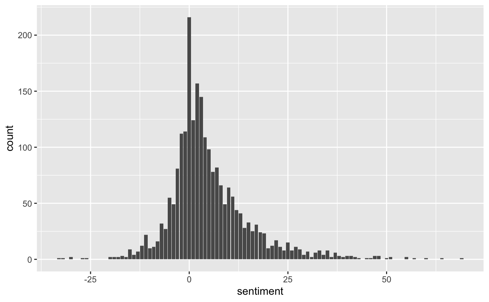
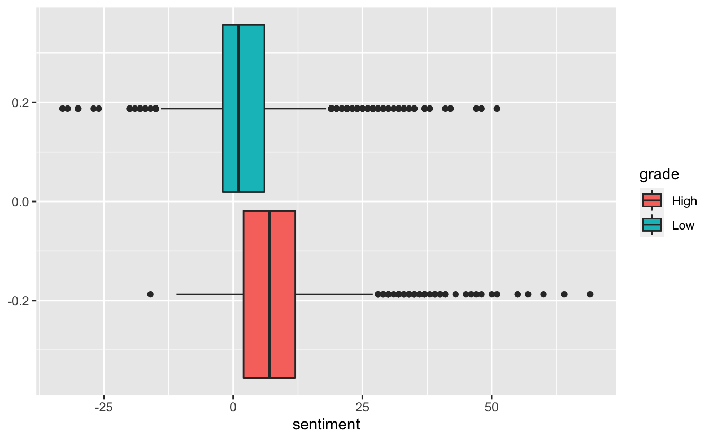

This is the second blog post in the textrecipes series where I go over the various text preprocessing workflows you can do with textrecipes. This post will be covering how to use lexicons to create features. This post will not cover end-to-end modeling but will only look at how to add lexicons information into your recipe.
Packages 📦
We are going fairly light package wise this time only needing tidymodels, textrecipes, and lastly tidytext for EDA. We will also be using textdata to provide lexicons.
library(tidymodels)
library(textrecipes)
library(tidytext)
library(textdata)
theme_set(theme_minimal())What is a lexicon?
A lexicon is a list of words with one or more corresponding values for each word. You could imagine a sentiment lexicon having entries such as “awesome = 1”, “terrible = -1” and “okay = 0”. Having this information could be useful if you want to predict if some text is positively charged or negatively charged.
One real-world lexicon is the AFINN lexicon. It rates English words on a scale from -5 (negative) to 5 (positive). The words have been manually labeled by Finn Årup Nielsen in 2009-2011. It is available in textdata as the function lexicon_afinn()
lexicon_afinn()
## # A tibble: 2,477 x 2
## word value
## <chr> <dbl>
## 1 abandon -2
## 2 abandoned -2
## 3 abandons -2
## 4 abducted -2
## 5 abduction -2
## 6 abductions -2
## 7 abhor -3
## 8 abhorred -3
## 9 abhorrent -3
## 10 abhors -3
## # … with 2,467 more rowsThe first time you use a function in textdata you are given a prompt to download. Please carefully read the prompt to make sure you are able to conform to the license and the demands of the authors.
And we have plenty of words. Note that this list doesn’t give every possible word-value pair, this is partly because words with no apparent sentiment such as (cat, house, government) haven’t been encluded. Always make sure to manually inspect a premade lexicon before using it in your application. Make sure that the domain you are working in is similar to the domain the lexicon was created for. An example of a domain-specific lexicon is the Loughran-McDonald sentiment lexicon (lexicon_loughran()) which was created for use with financial documents.
The data
We will be using the data Animal Crossing data from the last post again.
user_reviews <- readr::read_tsv('https://raw.githubusercontent.com/rfordatascience/tidytuesday/master/data/2020/2020-05-05/user_reviews.tsv')
user_reviews <- user_reviews %>%
mutate(grade = factor(grade > 7, c(TRUE, FALSE), c("High", "Low")))
set.seed(1234)
review_split <- initial_split(user_reviews)
review_training <- training(review_split)
review_testing <- training(review_split)We can use lexicons in our text mining with tidytext too. First, we will tokenize
review_tokens <- review_training %>%
select(grade, user_name, text) %>%
unnest_tokens(tokens, text)
review_tokens
## # A tibble: 270,013 x 3
## grade user_name tokens
## <fct> <chr> <chr>
## 1 Low mds27272 my
## 2 Low mds27272 gf
## 3 Low mds27272 started
## 4 Low mds27272 playing
## 5 Low mds27272 before
## 6 Low mds27272 me
## 7 Low mds27272 no
## 8 Low mds27272 option
## 9 Low mds27272 to
## 10 Low mds27272 create
## # … with 270,003 more rowsthen we can use a left_join() to add a sentiment variable
review_tokens %>%
left_join(lexicon_afinn(), by = c("tokens" = "word"))
## # A tibble: 270,013 x 4
## grade user_name tokens value
## <fct> <chr> <chr> <dbl>
## 1 Low mds27272 my NA
## 2 Low mds27272 gf NA
## 3 Low mds27272 started NA
## 4 Low mds27272 playing NA
## 5 Low mds27272 before NA
## 6 Low mds27272 me NA
## 7 Low mds27272 no -1
## 8 Low mds27272 option NA
## 9 Low mds27272 to NA
## 10 Low mds27272 create NA
## # … with 270,003 more rowsIf we want to look at the overall document-wise sentiment level we can sum the values within each document
review_tokens_sentiment <- review_tokens %>%
left_join(lexicon_afinn(), by = c("tokens" = "word")) %>%
group_by(user_name, grade) %>%
summarise(sentiment = sum(value, na.rm = TRUE))
review_tokens_sentiment
## # A tibble: 2,250 x 3
## # Groups: user_name [2,250]
## user_name grade sentiment
## <chr> <fct> <dbl>
## 1 11_11 Low 16
## 2 12hwilso Low 3
## 3 1mooey High 10
## 4 24ths Low 1
## 5 3nd3r02 Low 25
## 6 425_Flex Low -11
## 7 7kurtis7 Low -3
## 8 7Swords Low -2
## 9 8bheotapus Low -7
## 10 A_Mighty_Pleb Low 0
## # … with 2,240 more rowsSince the AFINN lexicon is centered around 0 we can very generally say that positive scores tend to be more positive and a negative score will tend to accompany negative texts.
There are many oversimplifications going on here. We are not taking sentence length into account. There is no reason to believe a 100-word review with a score of 10 is any less positive than a 1000-word review with a score of 100. It is also not obvious that “a breathtaking(5) bastard(-5)” is a neutral statement.
We can visualize the final distribution
review_tokens_sentiment %>%
ggplot(aes(sentiment)) +
geom_bar()
But it would be more informative if we include grade to see if there is a difference
review_tokens_sentiment %>%
ggplot(aes(sentiment, fill = grade)) +
geom_boxplot()
It appears that the lexicon is not entirely useless. The sentiments for highly-rated reviews are a little bit higher.
Reshaping a lexicon
A lexicon needs to be in a specific format to be used in textrecipes. We need a tibble with the first column containing tokens and any additional columns should contain the numerics. lexicon_afinn() already meets the demand and can be used directly. The lexicon_loughran() doesn’t give us the information we want.
lexicon_loughran()
## # A tibble: 4,150 x 2
## word sentiment
## <chr> <chr>
## 1 abandon negative
## 2 abandoned negative
## 3 abandoning negative
## 4 abandonment negative
## 5 abandonments negative
## 6 abandons negative
## 7 abdicated negative
## 8 abdicates negative
## 9 abdicating negative
## 10 abdication negative
## # … with 4,140 more rowsWith the sentiment being a character denoting the sentiment of the word. What might not be obvious at first glance of this lexicon is that a word can have multiple sentiments such as the word “encumber” which has 3
lexicon_loughran() %>%
filter(word == "encumber")
## # A tibble: 3 x 2
## word sentiment
## <chr> <chr>
## 1 encumber negative
## 2 encumber litigious
## 3 encumber constrainingWe can use tidyr to turn this into a wide format.
lexicon_loughran_wide <- lexicon_loughran() %>%
mutate(var = 1) %>%
tidyr::pivot_wider(names_from = sentiment,
values_from = var,
values_fill = list(var = 0))
lexicon_loughran_wide
## # A tibble: 3,917 x 7
## word negative positive uncertainty litigious constraining superfluous
## <chr> <dbl> <dbl> <dbl> <dbl> <dbl> <dbl>
## 1 abandon 1 0 0 0 0 0
## 2 abandoned 1 0 0 0 0 0
## 3 abandoning 1 0 0 0 0 0
## 4 abandonment 1 0 0 0 0 0
## 5 abandonments 1 0 0 0 0 0
## 6 abandons 1 0 0 0 0 0
## 7 abdicated 1 0 0 0 0 0
## 8 abdicates 1 0 0 0 0 0
## 9 abdicating 1 0 0 0 0 0
## 10 abdication 1 0 0 0 0 0
## # … with 3,907 more rowsThis is now be used. Textrecipes are able to handle multi-axis lexicons with no problems.
Using textrecipes
To use these lexicons in our modeling step will we use the step_word_embeddings() step. This is normally used for word embeddings, but you can treat a lexicon (when transformed according to the last section) as a selection of word vector or in other words a word embedding.
To see the effect lets create a minimal recipe that only sums along the lexicons using the AFINN lexicon
recipe(~ text, data = review_training) %>%
step_tokenize(text) %>%
step_word_embeddings(text, embeddings = lexicon_afinn()) %>%
prep() %>%
juice()
## # A tibble: 2,250 x 1
## w_embed_sum_value
## <dbl>
## 1 -11
## 2 7
## 3 -5
## 4 9
## 5 2
## 6 16
## 7 11
## 8 0
## 9 4
## 10 -3
## # … with 2,240 more rowsThis gives us 1 column of the sum of the values. If we instead used the lexicon_loughran_wide lexicon the get back 6 variables.
recipe(~ text, data = review_training) %>%
step_tokenize(text) %>%
step_word_embeddings(text, embeddings = lexicon_loughran_wide, prefix = "loughran") %>%
prep() %>%
juice()
## # A tibble: 2,250 x 6
## loughran_sum_ne… loughran_sum_po… loughran_sum_un… loughran_sum_li…
## <dbl> <dbl> <dbl> <dbl>
## 1 2 0 0 0
## 2 2 8 0 0
## 3 2 0 0 0
## 4 0 3 0 0
## 5 2 2 1 0
## 6 2 5 6 0
## 7 0 4 0 0
## 8 1 0 0 0
## 9 2 5 0 0
## 10 0 0 0 0
## # … with 2,240 more rows, and 2 more variables:
## # loughran_sum_constraining <dbl>, loughran_sum_superfluous <dbl>To use the lexicon values along with side term frequencies can we use step_mutate() to create a separate variable to be used for lexicon calculations.
rec_spec <- recipe(grade ~ text + date, review_training) %>%
# Days since release
step_mutate(date = as.numeric(date - as.Date("2020-03-20"))) %>%
# Tokenize to words
step_tokenize(text) %>%
# Create copy of text variable
step_mutate(text_lexicon = text) %>%
# Apply lexicon counting
step_word_embeddings(text_lexicon, embeddings = lexicon_afinn(), prefix = "afinn") %>%
# Remove stopwords
step_stopwords(text) %>%
# Remove less frequent words
step_tokenfilter(text, max_tokens = 100) %>%
# Calculate term frequencies
step_tf(text, weight_scheme = "binary")
rec_spec
## Data Recipe
##
## Inputs:
##
## role #variables
## outcome 1
## predictor 2
##
## Operations:
##
## Variable mutation for date
## Tokenization for text
## Variable mutation for text_lexicon
## Word embeddings aggregated from text_lexicon
## Stop word removal for text
## Text filtering for text
## Term frequency with textBy inspectiong the results we get:
rec_spec %>%
prep() %>%
juice()
## # A tibble: 2,250 x 103
## date grade afinn_sum_value tf_text_1 tf_text_10 tf_text_2 tf_text_able
## <dbl> <fct> <dbl> <lgl> <lgl> <lgl> <lgl>
## 1 0 Low -11 FALSE FALSE FALSE FALSE
## 2 0 Low 7 TRUE FALSE FALSE TRUE
## 3 0 Low -5 FALSE FALSE FALSE FALSE
## 4 0 Low 9 FALSE FALSE FALSE FALSE
## 5 0 Low 2 FALSE FALSE FALSE TRUE
## 6 0 Low 16 FALSE FALSE FALSE FALSE
## 7 0 Low 11 FALSE FALSE FALSE FALSE
## 8 0 Low 0 FALSE FALSE FALSE FALSE
## 9 0 Low 4 FALSE FALSE FALSE FALSE
## 10 0 Low -3 FALSE FALSE FALSE FALSE
## # … with 2,240 more rows, and 96 more variables: tf_text_absolutely <lgl>,
## # tf_text_account <lgl>, tf_text_actually <lgl>, tf_text_also <lgl>,
## # tf_text_amazing <lgl>, tf_text_animal <lgl>, tf_text_another <lgl>,
## # tf_text_anything <lgl>, tf_text_back <lgl>, tf_text_bad <lgl>,
## # tf_text_best <lgl>, tf_text_bought <lgl>, tf_text_buy <lgl>,
## # tf_text_can <lgl>, tf_text_console <lgl>, tf_text_crossing <lgl>,
## # tf_text_day <lgl>, tf_text_else <lgl>, tf_text_enjoy <lgl>,
## # tf_text_even <lgl>, tf_text_ever <lgl>, tf_text_every <lgl>,
## # tf_text_everyone <lgl>, tf_text_everything <lgl>, tf_text_expand <lgl>,
## # tf_text_experience <lgl>, tf_text_fact <lgl>, tf_text_family <lgl>,
## # tf_text_feel <lgl>, tf_text_first <lgl>, tf_text_full <lgl>,
## # tf_text_fun <lgl>, tf_text_game <lgl>, tf_text_games <lgl>,
## # tf_text_get <lgl>, tf_text_gets <lgl>, tf_text_give <lgl>,
## # tf_text_go <lgl>, tf_text_going <lgl>, tf_text_good <lgl>,
## # tf_text_great <lgl>, tf_text_horizons <lgl>, tf_text_island <lgl>,
## # tf_text_islands <lgl>, `tf_text_it’s` <lgl>, tf_text_just <lgl>,
## # tf_text_let <lgl>, tf_text_like <lgl>, tf_text_little <lgl>,
## # tf_text_lot <lgl>, tf_text_love <lgl>, tf_text_made <lgl>,
## # tf_text_make <lgl>, tf_text_makes <lgl>, tf_text_many <lgl>,
## # tf_text_money <lgl>, tf_text_much <lgl>, tf_text_multiplayer <lgl>,
## # tf_text_multiple <lgl>, tf_text_never <lgl>, tf_text_new <lgl>,
## # tf_text_nintendo <lgl>, tf_text_now <lgl>, tf_text_one <lgl>,
## # tf_text_people <lgl>, tf_text_per <lgl>, tf_text_person <lgl>,
## # tf_text_play <lgl>, tf_text_played <lgl>, tf_text_player <lgl>,
## # tf_text_players <lgl>, tf_text_playing <lgl>, tf_text_progress <lgl>,
## # tf_text_really <lgl>, tf_text_review <lgl>, tf_text_save <lgl>,
## # tf_text_second <lgl>, tf_text_see <lgl>, tf_text_series <lgl>,
## # tf_text_share <lgl>, tf_text_since <lgl>, tf_text_single <lgl>,
## # tf_text_start <lgl>, tf_text_still <lgl>, tf_text_switch <lgl>,
## # tf_text_system <lgl>, tf_text_thing <lgl>, tf_text_things <lgl>,
## # tf_text_think <lgl>, tf_text_time <lgl>, tf_text_two <lgl>,
## # tf_text_us <lgl>, tf_text_want <lgl>, tf_text_way <lgl>,
## # tf_text_well <lgl>, tf_text_wife <lgl>session information
─ Session info ───────────────────────────────────────────────────────────────
setting value
version R version 4.0.0 (2020-04-24)
os macOS Mojave 10.14.6
system x86_64, darwin17.0
ui X11
language (EN)
collate en_US.UTF-8
ctype en_US.UTF-8
tz America/Los_Angeles
date 2020-05-11
─ Packages ───────────────────────────────────────────────────────────────────
package * version date lib source
assertthat 0.2.1 2019-03-21 [1] CRAN (R 4.0.0)
backports 1.1.6 2020-04-05 [1] CRAN (R 4.0.0)
base64enc 0.1-3 2015-07-28 [1] CRAN (R 4.0.0)
bayesplot 1.7.1 2019-12-01 [1] CRAN (R 4.0.0)
blogdown 0.18 2020-03-04 [1] CRAN (R 4.0.0)
bookdown 0.18 2020-03-05 [1] CRAN (R 4.0.0)
boot 1.3-25 2020-04-26 [1] CRAN (R 4.0.0)
broom * 0.5.6 2020-04-20 [1] CRAN (R 4.0.0)
callr 3.4.3 2020-03-28 [1] CRAN (R 4.0.0)
class 7.3-17 2020-04-26 [1] CRAN (R 4.0.0)
cli 2.0.2 2020-02-28 [1] CRAN (R 4.0.0)
clipr 0.7.0 2019-07-23 [1] CRAN (R 4.0.0)
codetools 0.2-16 2018-12-24 [1] CRAN (R 4.0.0)
colorspace 1.4-1 2019-03-18 [1] CRAN (R 4.0.0)
colourpicker 1.0 2017-09-27 [1] CRAN (R 4.0.0)
crayon 1.3.4 2017-09-16 [1] CRAN (R 4.0.0)
crosstalk 1.1.0.1 2020-03-13 [1] CRAN (R 4.0.0)
desc 1.2.0 2018-05-01 [1] CRAN (R 4.0.0)
details * 0.2.1 2020-01-12 [1] CRAN (R 4.0.0)
dials * 0.0.6 2020-04-03 [1] CRAN (R 4.0.0)
DiceDesign 1.8-1 2019-07-31 [1] CRAN (R 4.0.0)
digest 0.6.25 2020-02-23 [1] CRAN (R 4.0.0)
dplyr * 0.8.5 2020-03-07 [1] CRAN (R 4.0.0)
DT 0.13 2020-03-23 [1] CRAN (R 4.0.0)
dygraphs 1.1.1.6 2018-07-11 [1] CRAN (R 4.0.0)
ellipsis 0.3.0 2019-09-20 [1] CRAN (R 4.0.0)
emo 0.0.0.9000 2020-05-12 [1] Github (hadley/emo@3f03b11)
evaluate 0.14 2019-05-28 [1] CRAN (R 4.0.0)
fansi 0.4.1 2020-01-08 [1] CRAN (R 4.0.0)
fastmap 1.0.1 2019-10-08 [1] CRAN (R 4.0.0)
foreach 1.5.0 2020-03-30 [1] CRAN (R 4.0.0)
fs 1.4.1 2020-04-04 [1] CRAN (R 4.0.0)
furrr 0.1.0 2018-05-16 [1] CRAN (R 4.0.0)
future 1.17.0 2020-04-18 [1] CRAN (R 4.0.0)
generics 0.0.2 2018-11-29 [1] CRAN (R 4.0.0)
ggplot2 * 3.3.0 2020-03-05 [1] CRAN (R 4.0.0)
ggridges 0.5.2 2020-01-12 [1] CRAN (R 4.0.0)
globals 0.12.5 2019-12-07 [1] CRAN (R 4.0.0)
glue 1.4.0 2020-04-03 [1] CRAN (R 4.0.0)
gower 0.2.1 2019-05-14 [1] CRAN (R 4.0.0)
GPfit 1.0-8 2019-02-08 [1] CRAN (R 4.0.0)
gridExtra 2.3 2017-09-09 [1] CRAN (R 4.0.0)
gtable 0.3.0 2019-03-25 [1] CRAN (R 4.0.0)
gtools 3.8.2 2020-03-31 [1] CRAN (R 4.0.0)
htmltools 0.4.0 2019-10-04 [1] CRAN (R 4.0.0)
htmlwidgets 1.5.1 2019-10-08 [1] CRAN (R 4.0.0)
httpuv 1.5.2 2019-09-11 [1] CRAN (R 4.0.0)
httr 1.4.1 2019-08-05 [1] CRAN (R 4.0.0)
igraph 1.2.5 2020-03-19 [1] CRAN (R 4.0.0)
infer * 0.5.1 2019-11-19 [1] CRAN (R 4.0.0)
inline 0.3.15 2018-05-18 [1] CRAN (R 4.0.0)
ipred 0.9-9 2019-04-28 [1] CRAN (R 4.0.0)
iterators 1.0.12 2019-07-26 [1] CRAN (R 4.0.0)
janeaustenr 0.1.5 2017-06-10 [1] CRAN (R 4.0.0)
knitr * 1.28 2020-02-06 [1] CRAN (R 4.0.0)
later 1.0.0 2019-10-04 [1] CRAN (R 4.0.0)
lattice 0.20-41 2020-04-02 [1] CRAN (R 4.0.0)
lava 1.6.7 2020-03-05 [1] CRAN (R 4.0.0)
lhs 1.0.2 2020-04-13 [1] CRAN (R 4.0.0)
lifecycle 0.2.0 2020-03-06 [1] CRAN (R 4.0.0)
listenv 0.8.0 2019-12-05 [1] CRAN (R 4.0.0)
lme4 1.1-23 2020-04-07 [1] CRAN (R 4.0.0)
loo 2.2.0 2019-12-19 [1] CRAN (R 4.0.0)
lubridate 1.7.8 2020-04-06 [1] CRAN (R 4.0.0)
magrittr 1.5 2014-11-22 [1] CRAN (R 4.0.0)
markdown 1.1 2019-08-07 [1] CRAN (R 4.0.0)
MASS 7.3-51.6 2020-04-26 [1] CRAN (R 4.0.0)
Matrix 1.2-18 2019-11-27 [1] CRAN (R 4.0.0)
matrixStats 0.56.0 2020-03-13 [1] CRAN (R 4.0.0)
mime 0.9 2020-02-04 [1] CRAN (R 4.0.0)
miniUI 0.1.1.1 2018-05-18 [1] CRAN (R 4.0.0)
minqa 1.2.4 2014-10-09 [1] CRAN (R 4.0.0)
munsell 0.5.0 2018-06-12 [1] CRAN (R 4.0.0)
nlme 3.1-147 2020-04-13 [1] CRAN (R 4.0.0)
nloptr 1.2.2.1 2020-03-11 [1] CRAN (R 4.0.0)
nnet 7.3-14 2020-04-26 [1] CRAN (R 4.0.0)
parsnip * 0.1.1 2020-05-06 [1] CRAN (R 4.0.0)
pillar 1.4.4 2020-05-05 [1] CRAN (R 4.0.0)
pkgbuild 1.0.8 2020-05-07 [1] CRAN (R 4.0.0)
pkgconfig 2.0.3 2019-09-22 [1] CRAN (R 4.0.0)
plyr 1.8.6 2020-03-03 [1] CRAN (R 4.0.0)
png 0.1-7 2013-12-03 [1] CRAN (R 4.0.0)
prettyunits 1.1.1 2020-01-24 [1] CRAN (R 4.0.0)
pROC 1.16.2 2020-03-19 [1] CRAN (R 4.0.0)
processx 3.4.2 2020-02-09 [1] CRAN (R 4.0.0)
prodlim 2019.11.13 2019-11-17 [1] CRAN (R 4.0.0)
promises 1.1.0 2019-10-04 [1] CRAN (R 4.0.0)
ps 1.3.3 2020-05-08 [1] CRAN (R 4.0.0)
purrr * 0.3.4 2020-04-17 [1] CRAN (R 4.0.0)
R6 2.4.1 2019-11-12 [1] CRAN (R 4.0.0)
Rcpp 1.0.4.6 2020-04-09 [1] CRAN (R 4.0.0)
recipes * 0.1.12 2020-05-01 [1] CRAN (R 4.0.0)
reshape2 1.4.4 2020-04-09 [1] CRAN (R 4.0.0)
rlang 0.4.6 2020-05-02 [1] CRAN (R 4.0.0)
rmarkdown 2.1 2020-01-20 [1] CRAN (R 4.0.0)
rpart 4.1-15 2019-04-12 [1] CRAN (R 4.0.0)
rprojroot 1.3-2 2018-01-03 [1] CRAN (R 4.0.0)
rsample * 0.0.6 2020-03-31 [1] CRAN (R 4.0.0)
rsconnect 0.8.16 2019-12-13 [1] CRAN (R 4.0.0)
rstan 2.19.3 2020-02-11 [1] CRAN (R 4.0.0)
rstanarm 2.19.3 2020-02-11 [1] CRAN (R 4.0.0)
rstantools 2.0.0 2019-09-15 [1] CRAN (R 4.0.0)
rstudioapi 0.11 2020-02-07 [1] CRAN (R 4.0.0)
scales * 1.1.1 2020-05-11 [1] CRAN (R 4.0.0)
sessioninfo 1.1.1 2018-11-05 [1] CRAN (R 4.0.0)
shiny 1.4.0.2 2020-03-13 [1] CRAN (R 4.0.0)
shinyjs 1.1 2020-01-13 [1] CRAN (R 4.0.0)
shinystan 2.5.0 2018-05-01 [1] CRAN (R 4.0.0)
shinythemes 1.1.2 2018-11-06 [1] CRAN (R 4.0.0)
SnowballC 0.7.0 2020-04-01 [1] CRAN (R 4.0.0)
StanHeaders 2.19.2 2020-02-11 [1] CRAN (R 4.0.0)
statmod 1.4.34 2020-02-17 [1] CRAN (R 4.0.0)
stopwords 2.0 2020-04-14 [1] CRAN (R 4.0.0)
stringi 1.4.6 2020-02-17 [1] CRAN (R 4.0.0)
stringr 1.4.0 2019-02-10 [1] CRAN (R 4.0.0)
survival 3.1-12 2020-04-10 [1] CRAN (R 4.0.0)
textrecipes * 0.2.2 2020-05-10 [1] CRAN (R 4.0.0)
threejs 0.3.3 2020-01-21 [1] CRAN (R 4.0.0)
tibble * 3.0.1 2020-04-20 [1] CRAN (R 4.0.0)
tidymodels * 0.1.0 2020-02-16 [1] CRAN (R 4.0.0)
tidyposterior 0.0.2 2018-11-15 [1] CRAN (R 4.0.0)
tidypredict 0.4.5 2020-02-10 [1] CRAN (R 4.0.0)
tidyr 1.0.3 2020-05-07 [1] CRAN (R 4.0.0)
tidyselect 1.1.0 2020-05-11 [1] CRAN (R 4.0.0)
tidytext * 0.2.4 2020-04-17 [1] CRAN (R 4.0.0)
timeDate 3043.102 2018-02-21 [1] CRAN (R 4.0.0)
tokenizers 0.2.1 2018-03-29 [1] CRAN (R 4.0.0)
tune * 0.1.0 2020-04-02 [1] CRAN (R 4.0.0)
usethis 1.6.1 2020-04-29 [1] CRAN (R 4.0.0)
vctrs 0.3.0 2020-05-11 [1] CRAN (R 4.0.0)
withr 2.2.0 2020-04-20 [1] CRAN (R 4.0.0)
workflows * 0.1.1 2020-03-17 [1] CRAN (R 4.0.0)
xfun 0.13 2020-04-13 [1] CRAN (R 4.0.0)
xml2 1.3.2 2020-04-23 [1] CRAN (R 4.0.0)
xtable 1.8-4 2019-04-21 [1] CRAN (R 4.0.0)
xts 0.12-0 2020-01-19 [1] CRAN (R 4.0.0)
yaml 2.2.1 2020-02-01 [1] CRAN (R 4.0.0)
yardstick * 0.0.6 2020-03-17 [1] CRAN (R 4.0.0)
zoo 1.8-8 2020-05-02 [1] CRAN (R 4.0.0)
[1] /Library/Frameworks/R.framework/Versions/4.0/Resources/library